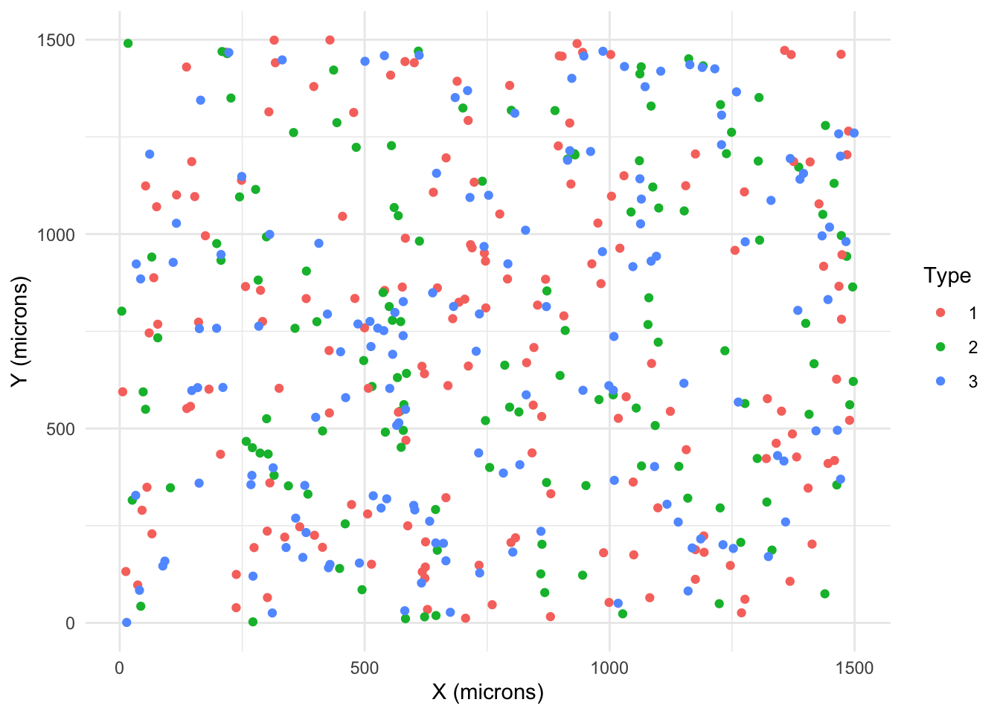
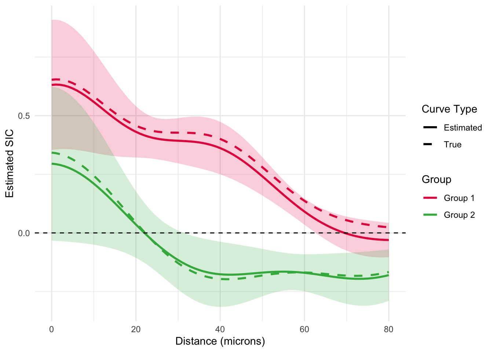

knitr::opts_chunk$set(echo = TRUE, message = FALSE, warning = FALSE)
library(SHADE)
library(dplyr)
library(tidyr)
library(stringr)
library(ggplot2)
library(tibble)
library(Matrix)
library(spatstat.geom)
library(spatstat.random)
library(posterior)SHADE Workflow Demo with Simulated Spatial Data
Overview
This demo illustrates the SHADE model described in the paper “SHADE: A Multilevel Bayesian Framework for Modeling Directional Spatial Interactions in Tissue Microenvironments”. SHADE is a Bayesian hierarchical model designed to estimate asymmetric spatial associations between cell types across spatial scales and biological levels (image, patient, cohort).
We will:
- Simulate spatial point patterns with biologically plausible asymmetry
- Construct interaction features using radial basis functions
- Prepare data for Bayesian inference using logistic approximation
- Fit the SHADE model
- Summarize and compare posterior results to ground truth
1. Load Packages
We start by loading all necessary libraries, including your SHADE package and its dependencies.
2. Set Simulation Parameters
We simulate a small dataset of tissue images with three cell types. One of these is treated as the “target” cell type whose spatial intensity is influenced by the presence of others.
num_pts_per_group <- 10
images_per_pt <- 2
num_pt_groups <- 2
num_pts <- num_pts_per_group * num_pt_groups
num_types <- 3
np <- 150 # number of cells per type
ratio <- 2 # ratio of dummy points (for logistic approximation) to real points
n_dummy <- floor(np * ratio)
num_basis <- 3 # number of basis functions
basis <- make_rbfs(n_basis_functions = num_basis,
max_dist = 75, basis_function_sigma = 15)
mean_alpha <- log(np / (1500^2)) # mean baseline intensity for each cell type
params <- make_simulation_parameters(
mean_alpha = mean_alpha,
sigma_beta_global = 0.5,
sigma_beta_indiv = 0.1,
sigma_beta_local = 0.1,
scale_sigmas = 5,
num_pt_groups = num_pt_groups,
num_types = num_types,
num_combos = num_types - 1,
num_pot = num_basis,
indiv_to_group = rep(1:num_pt_groups, each=num_pts_per_group),
num_pts = num_pts,
num_images = num_pts * images_per_pt,
sample_to_indiv = rep(1:num_pts, each = images_per_pt),
seed = 2025
)
betas_local <- params$betas_local[-1, ]3. Simulate Spatial Point Patterns
We simulate images where target cell placement depends on background cell types. Conditional intensities are generated using spatial interaction fields, which are sums of RBFs weighted by coefficients.
W <- owin(c(0, 1500), c(0, 1500))
area <- 1500^2
num_images <- num_pts * images_per_pt
sim_data <- lapply(1:num_images, function(i) {
# cat(paste0(i,"/",num_images,"\n"))
if (num_types == 2) {
pat <- rpoispp(lambda = np / area, win = W)
marks(pat) <- factor("t1")
} else {
pat <- rmpoispp(lambda = rep(np / area, num_types - 1), win = W)
}
dens_list <- lapply(1:(num_types - 1), function(j) {
coeffs <- betas_local[((j - 1) * num_basis + 1):(j * num_basis), i]
custom_kernel <- Vectorize(function(x, y) {
d <- sqrt(x^2 + y^2)
sum(sapply(seq_along(coeffs),
function(k) coeffs[k] * basis[[k]](d)))
})
subs <- unmark(subset(pat, marks == j))
smooth_density_fft(subs, custom_kernel, resolution = 128)
})
int_dens <- Reduce("+", dens_list)
lambda_integral <- sum(
exp(int_dens$v)) * (int_dens$xstep * int_dens$ystep)
beta0 <- log(np / lambda_integral)
target_pat <- rpoispp(lambda = exp(int_dens + beta0))
marks(target_pat) <- factor(num_types)
final_pat <- superimpose(pat, target_pat)
list(pat = final_pat, beta0 = beta0)
})Here is what an example point pattern from this simulated dataset would look like:
sim_data[[1]]$pat %>%
as.data.frame() %>%
ggplot(aes(x,y,color=marks)) +
geom_point() +
theme_minimal() +
labs(x="X (microns)",y="Y (microns)",color="Type")
4. Prepare the Data for SHADE
We extract spatial coordinates and cell type labels, and format metadata for hierarchical modeling. SHADE models variation across images, patients, and groups.
coords <- do.call(rbind, lapply(seq_along(sim_data), function(i) {
pat <- sim_data[[i]]$pat
raw_marks <- as.character(pat$marks)
relabeled_marks <- paste0("t", raw_marks)
tibble(
x = pat$x,
y = pat$y,
type = factor(relabeled_marks, levels = paste0("t", 1:num_types)),
image_id = factor(paste0("img_", i))
)
}))
image_ids <- levels(coords$image_id)
patient_ids <- rep(paste0("pt_", 1:num_pts), each = images_per_pt)
patient_metadata <- tibble(
Spot = image_ids,
Patient = patient_ids,
Group = rep(paste0("group_",1:num_pt_groups),
each=num_pts_per_group * images_per_pt)
)
prep <- prepare_spatial_model_data(
x = coords$x,
y = coords$y,
cell_type = coords$type,
image_id = coords$image_id,
patient_metadata = patient_metadata,
type_idx = num_types,
n_dummy = n_dummy,
n_basis_functions = num_basis
)5. Fit the SHADE Model
We use a logistic regression approximation to fit the conditional intensity function. Inference is performed via HMC using cmdstanr.
set.seed(2025)
fit <- run_SHADE_model(
prep$stan_data,
chains = 1,
iter_warmup = 300,
iter_sampling = 100,
refresh = 0,
output_dir = "Introduction_cache/"
)Running MCMC with 1 chain...Chain 1 finished in 51.7 seconds.6. Summarize Posterior Estimates
We summarize the posterior draws for global-level coefficients using an rvar object. Posterior draws capture uncertainty in spatial association curves (SICs).
rvars <- posterior::as_draws_rvars(fit$draws())
beta_global_rvar <- rvars$beta_global[-1, ]
posterior_global_tbl <- posterior::summarise_draws(
beta_global_rvar,
mean, median, sd, mad,
`5%` = ~quantile(.x, 0.05),
`95%` = ~quantile(.x, 0.95),
rhat, ess_bulk
) %>%
filter(str_detect(variable, "\\[")) %>%
separate(variable, into = c("param", "row", "col"),
sep = "\\[|,|\\]", convert = TRUE) %>%
mutate(term = paste0("β_global[", row, "] (Group ", col, ")"))
posterior_global_tbl %>%
select(term, mean, sd, `5%`, `95%`, rhat, ess_bulk) %>%
arrange(term)# A tibble: 12 × 7
term mean sd `5%` `95%` rhat ess_bulk
<chr> <dbl> <dbl> <dbl> <dbl> <dbl> <dbl>
1 β_global[1] (Group 1) 0.616 0.0799 0.482 0.740 1.01 23.3
2 β_global[1] (Group 2) 0.303 0.0984 0.111 0.450 1.16 5.41
3 β_global[2] (Group 1) 0.351 0.0334 0.302 0.408 1.00 21.9
4 β_global[2] (Group 2) -0.175 0.0427 -0.241 -0.113 1.26 3.66
5 β_global[3] (Group 1) -0.0388 0.0222 -0.0762 -0.00638 0.999 26.6
6 β_global[3] (Group 2) -0.187 0.0347 -0.248 -0.133 1.04 24.4
7 β_global[4] (Group 1) 0.273 0.103 0.102 0.403 1.28 10.1
8 β_global[4] (Group 2) -0.587 0.125 -0.788 -0.358 1.06 20.4
9 β_global[5] (Group 1) 0.233 0.0352 0.177 0.292 1.05 38.2
10 β_global[5] (Group 2) 0.265 0.0344 0.213 0.328 1.00 38.4
11 β_global[6] (Group 1) -0.0373 0.0237 -0.0769 -0.00170 1.18 5.40
12 β_global[6] (Group 2) -0.194 0.0282 -0.240 -0.153 1.00 21.6 7. Compare to Ground Truth Coefficients
We validate inference by comparing posterior estimates to the known coefficients used to generate the spatial interaction curves.
c(t(params$betas_global[-1, ])) [1] 0.63624454 0.35107568 0.38657724 -0.19784820 0.01782070 -0.17248259
[7] 0.19855594 -0.87752702 0.18548772 0.38245481 -0.08142717 -0.210481888. Visualize SICs across groups
Lastly, we construct the estimated SICs for both groups and compare them with the true SICs, along with 95% simultaneous credible intervals for the estimated SICs.
alpha <- 0.05 # for 95% simultaneous bands
x_seq <- seq(0, 80, 1)
x_des <- lapply(basis, \(pot) pot(x_seq)) %>% do.call(cbind, .)
# Loop over both groups
plot_data <- lapply(1:2, function(i) {
# Linear predictor samples
lp <- x_des %*% rvars$beta_global[2:4, i]
beta_true <- params$betas_global[2:4, i]
lp_true <- as.vector(x_des %*% beta_true)
# Step 1: Extract mean and SD per x
df_summary <- lp %>%
as.matrix() %>%
as.data.frame() %>%
mutate(x = x_seq) %>%
mutate(
mn = as.vector(E(V1)),
sd = as.vector(sd(V1))
)
# Step 2: Standardize residuals across samples
lp_std <- lp %>%
as.matrix() %>%
as.data.frame() %>%
mutate(across(
everything(),
~ (. - mean(.)) / sd(.)
))
# Step 3: Max absolute deviation across x per sample
max_dev <- lp_std %>%
summarise(across(everything(), ~ max(abs(.)))) %>%
pivot_longer(everything(),
names_to = "sample", values_to = "max_dev") %>%
pull(max_dev)
# Step 4: Critical value for simultaneous coverage
z_score_band <- quantile(max_dev, probs = 1 - alpha)
# Step 5: Simultaneous bands
df_summ <- df_summary %>%
mutate(
lo_simul = mn - z_score_band * sd,
hi_simul = mn + z_score_band * sd,
lp_true = lp_true,
group = paste0("Group ", i)
)
return(df_summ)
}) %>% bind_rows()
# Long-format for plotting
df_lines <- plot_data %>%
select(x, group, mn, lp_true) %>%
pivot_longer(cols = c(mn, lp_true),
names_to = "type", values_to = "value") %>%
mutate(type = ifelse(type == "mn", "Estimated", "True"))
df_ribbons <- plot_data %>%
mutate(type = "Estimated") %>%
select(x, group, type, ymin = lo_simul, ymax = hi_simul)
# Final plot
p_final <- ggplot() +
geom_ribbon(data = df_ribbons,
aes(x = x, ymin = ymin, ymax = ymax, fill = group),
alpha = 0.2) +
geom_line(data = df_lines,
aes(x = x, y = value, color = group, linetype = type),
size = 1) +
geom_hline(yintercept = 0, color = "black", linetype = "dashed") +
scale_color_manual(
values = c("Group 1" = "#e6194b", "Group 2" = "#3cb44b")) +
scale_fill_manual(
values = c("Group 1" = "#e6194b", "Group 2" = "#3cb44b")) +
scale_linetype_manual(
values = c("Estimated" = "solid", "True" = "dashed")) +
labs(
x = "Distance (microns)",
y = "Estimated SIC",
color = "Group",
linetype = "Curve Type"
) +
guides(fill = "none") +
theme_minimal()
p_final
Next Steps
- Perform posterior predictive checks
- Apply SHADE to real multiplexed imaging data